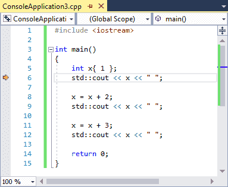
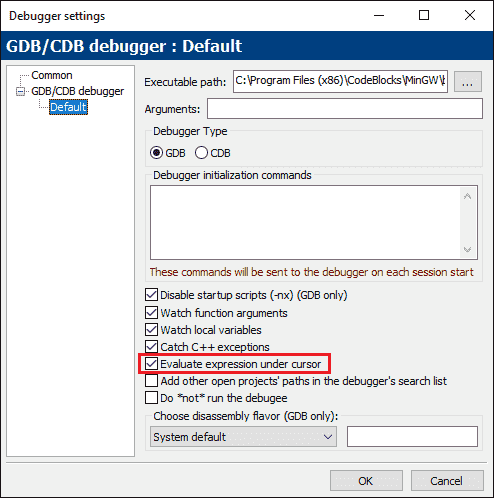
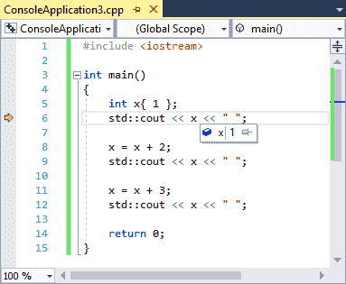
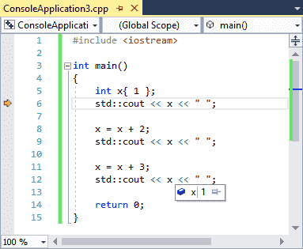
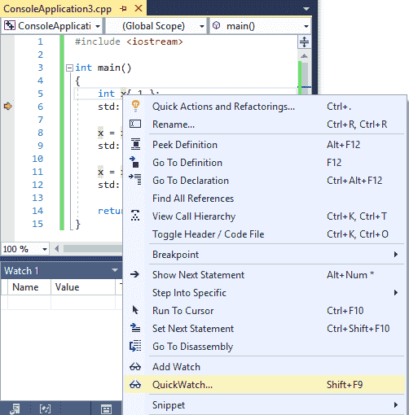
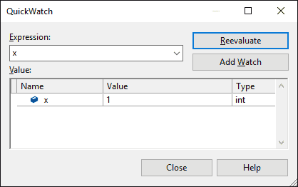
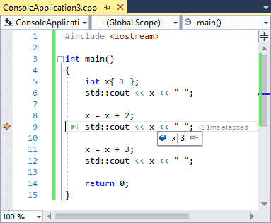
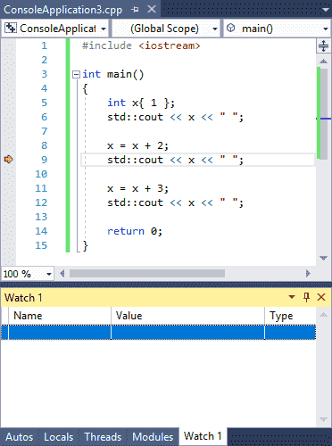
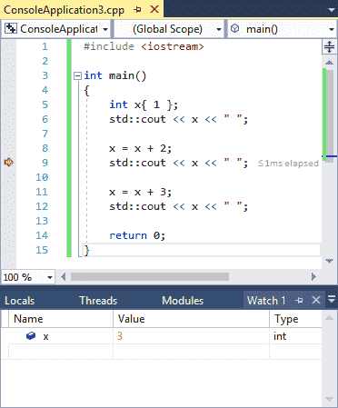

3.8 — Utiliser un débogueur intégré : surveiller les variables
Dans les leçons précédentes (3.6 -- Utiliser un débogueur intégré : pas à pas et 3.7 -- Utiliser un débogueur intégré : exécution et points d'arrêt), vous avez appris à utiliser le débogueur pour suivre le chemin d'exécution de votre programme. Cependant, avancer pas à pas n'est que la moitié de ce qui rend le débogueur utile. Le débogueur vous permet également d'examiner la valeur des variables au fil de l'exécution de votre code, sans avoir à modifier ce dernier.
Comme dans les leçons précédentes, nos exemples utiliseront Visual Studio. Si vous utilisez un autre IDE ou débogueur, les commandes peuvent porter des noms légèrement différents ou se trouver à d'autres emplacements.
Attention
Si vous revenez sur ce sujet, assurez-vous que votre projet est compilé avec une configuration de build de débogage (voir 0.9 -- Configurer votre compilateur : configurations de build pour plus d'informations). Si vous compilez votre projet avec une configuration de version (release) à la place, le fonctionnement du débogueur peut ne pas être correct.
Surveiller des variables
Surveiller une variable consiste à inspecter la valeur d'une variable pendant que le programme s'exécute en mode débogage. La plupart des débogueurs proposent plusieurs façons de le faire.
Regardons un exemple de programme :
#include <iostream>
int main()
{
int x{ 1 };
std::cout << x << ' ';
x = x + 2;
std::cout << x << ' ';
x = x + 3;
std::cout << x << ' ';
return 0;
}
Il s'agit d'un programme d'exemple assez simple : il affiche les nombres 1, 3 et 6.
Tout d'abord, utilisez exécuter jusqu'au curseur pour atteindre la ligne 6.

À ce stade, la variable x a déjà été créée et initialisée avec la valeur 1. Lorsque nous examinons la valeur de x, nous devrions donc voir la valeur 1.
La façon la plus simple d'examiner la valeur d'une variable simple comme x consiste à placer le pointeur de la souris sur celle-ci. Certains débogueurs modernes prennent en charge cette méthode pour inspecter les variables simples, et c'est le moyen le plus direct de le faire.
Pour les utilisateurs de Code::Blocks
Si vous utilisez Code::Blocks, cette option est désactivée par défaut (ce qui est, sans explication, un choix étrange). Activons-la. Tout d'abord, allez dans le menu Settings > Debugger…. Ensuite, sous le nœud GDB/CDB debugger, sélectionnez le profil Default. Enfin, cochez la case intitulée Evaluate expression under cursor.

Placez le pointeur de la souris sur la variable x de la ligne 6, et vous devriez voir quelque chose de semblable à ceci :

Notez que vous pouvez placer le pointeur sur n'importe quelle variable x, et pas seulement sur celle de la ligne en cours. Par exemple, si nous plaçons le pointeur sur le x de la ligne 12, nous verrons la même valeur :

Si vous utilisez Visual Studio, vous pouvez aussi utiliser QuickWatch. Sélectionnez le nom de la variable x avec la souris, puis choisissez « QuickWatch » dans le menu contextuel (clic droit).

Une sous-fenêtre s'affiche alors, contenant la valeur actuelle de la variable :

Fermez QuickWatch si vous l'avez ouvert.
Observons maintenant cette variable changer au fil de l'exécution pas à pas du programme. Choisissez pas à pas principal deux fois, ou utilisez exécuter jusqu'au curseur pour atteindre la ligne 9. La variable x doit maintenant valoir 3. Inspectez-la et vérifiez qu'il en est bien ainsi !

La fenêtre Watch
Utiliser le survol à la souris ou QuickWatch pour inspecter des variables convient si vous voulez connaître la valeur d'une variable à un instant donné. Cependant, ces méthodes ne sont pas très adaptées pour observer la valeur d'une variable qui change pendant l'exécution du code, car vous devez sans cesse survoler ou sélectionner à nouveau la variable.
Pour résoudre ce problème, tous les débogueurs intégrés modernes proposent une autre fonctionnalité, appelée fenêtre Watch (surveillance). La fenêtre Watch est une fenêtre dans laquelle vous pouvez ajouter les variables que vous souhaitez inspecter en permanence ; ces variables sont mises à jour au fur et à mesure que vous avancez dans le programme. La fenêtre Watch peut déjà être affichée lorsque vous entrez en mode débogage. Sinon, vous pouvez l'ouvrir via les commandes de fenêtres de votre IDE (généralement dans le menu Affichage ou Déboguer).
Pour les utilisateurs de Visual Studio
Dans Visual Studio, la fenêtre Watch se trouve dans le menu Déboguer > Fenêtres > Espion > Espion 1. Notez que cette option n'est активée qu'en mode débogage ; commencez donc par pas à pas détaillé pour entrer dans votre programme.
L'emplacement de cette fenêtre (ancrée à gauche, à droite ou en bas) peut varier. Vous pouvez la déplacer en faisant glisser l'onglet Espion 1 vers un autre côté de la fenêtre de l'application.
Pour les utilisateurs de Code::Blocks
Dans Code::Blocks, la fenêtre Watch se trouve dans le menu Debug > Debugging windows > Watches. Cette fenêtre apparaît probablement sous forme de fenêtre séparée. Vous pouvez l'ancrer à la fenêtre principale en la faisant glisser dessus.
Pour les utilisateurs de VS Code
Dans VS Code, la fenêtre Watch apparaît en mode débogage, ancrée à gauche au-dessus de la pile d'appels.
Vous devriez maintenant voir quelque chose de semblable à ceci :

La fenêtre Watch peut être vide ou contenir déjà des éléments.
Il existe généralement deux façons d'ajouter des variables à la fenêtre Watch :
- Ouvrez la fenêtre Watch et saisissez le nom de la variable à surveiller dans la colonne la plus à gauche.
- Dans la fenêtre de code, faites un clic droit sur la variable à surveiller et choisissez Add Watch (Visual Studio) ou Watch x (remplacez x par le nom de la variable) (Code::Blocks).
Si vous n'êtes pas déjà dans une session de débogage avec le marqueur d'exécution à la ligne 9 de votre programme, lancez une nouvelle session de débogage et utilisez exécuter jusqu'au curseur pour atteindre la ligne 9.
Ajoutez maintenant la variable « x » à votre liste de surveillance. Vous devriez voir ceci :

Ensuite, utilisez deux fois pas à pas principal, ou exécuter jusqu'au curseur pour atteindre la ligne 12 : la valeur de x doit passer de 3 à 6.
Les variables qui sortent de leur portée (par exemple une variable locale d'une fonction qui a déjà retourné le contrôle à l'appelant) restent affichées dans la fenêtre Watch, mais sont en général marquées comme « non disponibles », ou affichent leur dernière valeur connue en grisé. Si la variable revient dans sa portée (par exemple lorsque la fonction est appelée à nouveau), sa valeur réapparaît. Il n'est donc pas gênant de laisser des variables dans la fenêtre Watch même lorsqu'elles sont hors de portée.
Utiliser des surveillances est la meilleure façon d'observer l'évolution de la valeur d'une variable au fil du temps lorsque vous parcourez votre programme pas à pas.
Définir un point d'arrêt sur des variables surveillées
Certains débogueurs permettent de définir un point d'arrêt sur une variable surveillée plutôt que sur une ligne. Le programme s'arrête alors chaque fois que la valeur de cette variable change.
Par exemple, définir un tel point d'arrêt sur la variable x dans le programme ci-dessus fera s'arrêter le débogueur après l'exécution des lignes 8 et 11 (là où la valeur de x est modifiée).
Pour les utilisateurs de Visual Studio
Dans Visual Studio, assurez-vous d'abord que votre variable est surveillée. Ensuite, entrez dans votre programme avec pas à pas détaillé et rendez-vous dans la fenêtre Watch. Faites un clic droit sur la variable et sélectionnez « Break when value changes » (Arrêter quand la valeur change).
Vous devrez réactiver « Break when value changes » à chaque nouvelle session de débogage.
La fenêtre Watch peut aussi évaluer des expressions
La fenêtre Watch permet également d'évaluer des expressions simples. Si ce n'est pas déjà fait, utilisez exécuter jusqu'au curseur pour atteindre la ligne 12. Saisissez ensuite x + 2 dans la fenêtre Watch et observez le résultat (il doit valoir 8).
Vous pouvez aussi sélectionner une expression dans votre code, puis inspecter sa valeur en survolant celle-ci ou en l'ajoutant à la fenêtre Watch via le menu contextuel (clic droit).
Attention
Les identificateurs contenus dans les expressions surveillées sont évalués avec leurs valeurs actuelles. Si vous voulez connaître la valeur réelle d'une expression de votre code, utilisez d'abord exécuter jusqu'au curseur pour atteindre cette expression, afin que tous les identificateurs aient les bonnes valeurs.
Surveillances locales
Comme inspecter la valeur des variables locales d'une fonction est une opération courante lors du débogage, de nombreux débogueurs proposent un moyen rapide de surveiller la valeur de toutes les variables locales visibles.
Pour les utilisateurs de Visual Studio
Dans Visual Studio, vous pouvez voir la valeur de toutes les variables locales dans la fenêtre Variables locales, accessible via Déboguer > Fenêtres > Variables locales. Notez que vous devez être en session de débogage pour activer cette fenêtre.
Pour les utilisateurs de Code::Blocks
Dans Code::Blocks, ces informations sont intégrées à la fenêtre Watch, sous le nœud Locals. Si vous n'en voyez aucune, c'est qu'il n'y en a pas, ou que vous devez déplier le nœud.
Pour les utilisateurs de VS Code
Dans VS Code, la valeur des variables locales se trouve dans la section VARIABLES, ancrée à gauche en mode débogage. Il peut être nécessaire de déplier le nœud Locals.
Si vous voulez simplement surveiller la valeur d'une variable locale, consultez d'abord la fenêtre Locals. Elle devrait déjà être affichée.
Source originale : https://www.learncpp.com/cpp-tutorial/using-an-integrated-debugger-watching-variables/